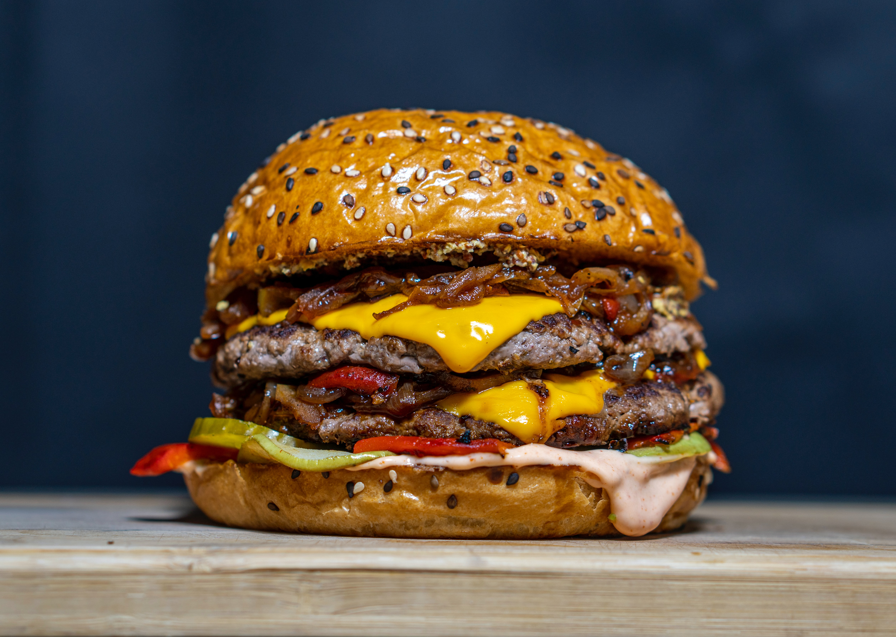

Cheeseburger Made Easy

Description
Another timeless classic, the cheesburger is a neceesity for family gatherings. Guaranteed to put smiles on faces and their bellies full!
Ingredients
Beef Burger
- Lean Ground Beef
- One Egg
- Bread Crumbs
- Lipton Onion Soup Mix
The Fixings
- Kaiser Bun
- Mayonnaise
- Ketchup
- Mustard
- Pickles
- Tomato
- Lettuce
Directions
Beef Burger
- In a bowl, add lean ground beef and egg and mix thoroughly
- add remaining dry ingredients and mix throoughly
- if mixture is runny, add more breadcrumb
- break apart small chunks roughly the size of a pool ball and form well in hand. Ensure no creases are visible on surface
- place balls on a baking sheet and flatten, and then using your thumb add a small divet to the center of each burger
Cooking directions
- Preheat bbq or grill to 450 degrees F
- Place beef prepared beef burger onto grill for 10 minutes, then flip and cook for another 10 minutes
- during this time, add kaiser buns to upper rack and crisp for 5 minutes
- add all fixings to the bun, then add burger. sandwich together and voila!
Back to Main
Hot Dog Receipe
Grilled Cheese Recipe